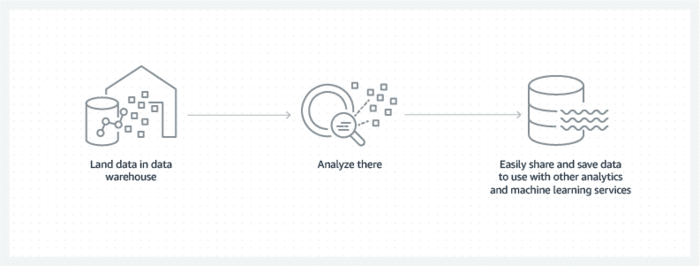
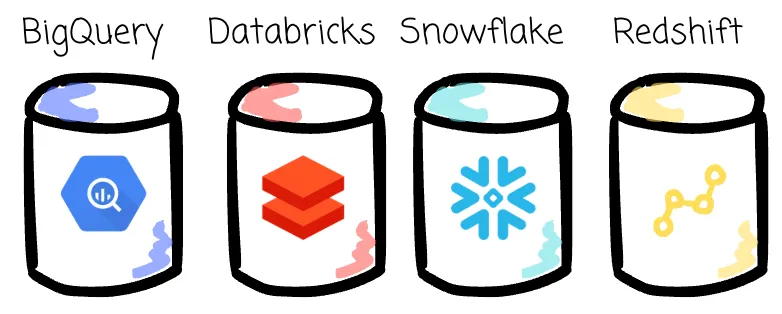
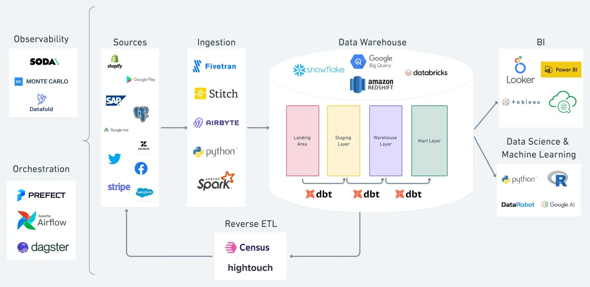

dbt sits on top of a warehouse. To understand why dbt looks the way it does, you need to understand what changed about warehouses in the last fifteen years.
A data warehouse is a database designed for analytics, not for running an app. Your company’s production systems (Postgres, MySQL, MongoDB…) are tuned for serving live traffic — tiny, fast reads and writes for one user at a time. A warehouse is the opposite: it’s tuned for huge analytical queries that scan millions of rows to answer questions like “how many active users did we have last quarter, broken down by plan tier?”

The mental model: data from many systems flows in (sales, marketing, product analytics, billing), gets organized into clean tables, and analysts/dashboards query that — never the production database. The warehouse is the company’s “single source of truth.”
| Operational database | Data warehouse | |
|---|---|---|
| Optimized for | Many small reads/writes per second (OLTP) | A few huge analytical scans (OLAP) |
| Typical query | SELECT * FROM users WHERE id = 42 |
SELECT plan, COUNT(*) FROM users GROUP BY plan |
| Schema | Normalized, lots of small tables | Denormalized, wide fact & dimension tables |
| Examples | Postgres, MySQL, MongoDB | Snowflake, BigQuery, Redshift, Databricks, DuckDB |
Traditional databases like Oracle, SQL Server, or on-prem Teradata coupled storage and compute to the same hardware. If you wanted more query power, you bought a bigger box. If you wanted more space, you bought a bigger box. Scaling either dimension meant a procurement cycle, downtime, and a license renegotiation.
Modern cloud warehouses decouple storage from compute. Storage lives in cheap object storage (S3, GCS, Azure Blob). Compute is a separate, elastic pool that you spin up on demand and pay for by the second.
[Cheap object storage] ← data lives here, always
↑
[Elastic compute pool] ← spun up on demand, paid by the second
Three consequences:


| Warehouse | Key trait | dbt adapter |
|---|---|---|
| Snowflake | The reference cloud-native warehouse. Per-second billing, separate “virtual warehouse” compute clusters per workload. | dbt-snowflake |
| BigQuery | Google’s serverless warehouse. No clusters — you submit a query and pay per byte scanned (or buy slot capacity). | dbt-bigquery |
| Redshift | AWS’s warehouse. Original launch was cluster-based; newer Redshift Serverless is fully elastic. | dbt-redshift |
| Databricks | Lakehouse on top of Delta Lake. Compute is Spark-based; SQL warehouse endpoints make it look like a warehouse to dbt. | dbt-databricks |
| DuckDB | Embedded — runs in-process, no server, no cloud. Single-file database. Great for laptops, CI, and learning. | dbt-duckdb (this course) |
The other warehouses in the table above are cloud services — you sign up, give them a credit card, click around in a UI to create a project, and connect over the network. Great for production. Terrible for learning, because every exercise would need internet, an account, and money.
DuckDB is “the SQLite for analytics”: a single binary that runs in-process on your laptop. No server, no Docker, no cloud account, no credit card. You install it as a Python package, point dbt at a .duckdb file, and you have a full warehouse you can throw away and recreate in seconds.
What makes it a real warehouse and not a toy:
dbt build finishes in seconds, even on a laptop, even with thousands of rows of seed data.Because dbt is warehouse-agnostic, every concept you learn in this course transfers directly to Snowflake, BigQuery, Redshift, or Databricks. The only thing that changes between adapters is the connection profile and a small set of warehouse-specific SQL features (e.g., Snowflake’s clustering keys, BigQuery’s partition expiration).
In the past, data transformation happened before loading into the warehouse. Raw data wasn’t present at the destination — only clean, structured, curated data was. Warehouse systems were expensive, storage disks were expensive, networks were slow, compute and storage were tightly coupled, and columnar storage wasn’t the norm. ETL was the only sensible answer: extract carefully, transform on a separate box, load only what you need.
The cloud warehouses changed every one of those constraints. Pay-as-you-go pricing, cheap object storage, fast networks, and columnar processing as the default commoditized high-performance analytics. People realized they didn’t have to transform before loading — just dump raw data straight from the source and let the transformation happen inside the warehouse later, in SQL.
So why invest in a separate, expensive transformation system when you’ve already paid for one that processes massive amounts of data using SQL?
That’s the wave dbt rode. The cloud warehouse made it economical to transform-in-place with SQL. dbt is the tool that turned ad-hoc warehouse SQL into something engineering teams could actually maintain.
Press n when you’re ready — next we’ll finally talk about dbt itself.